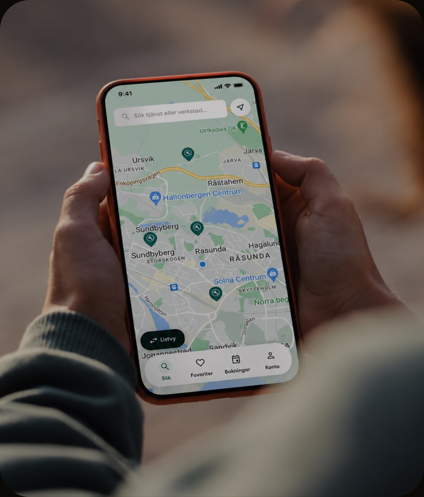
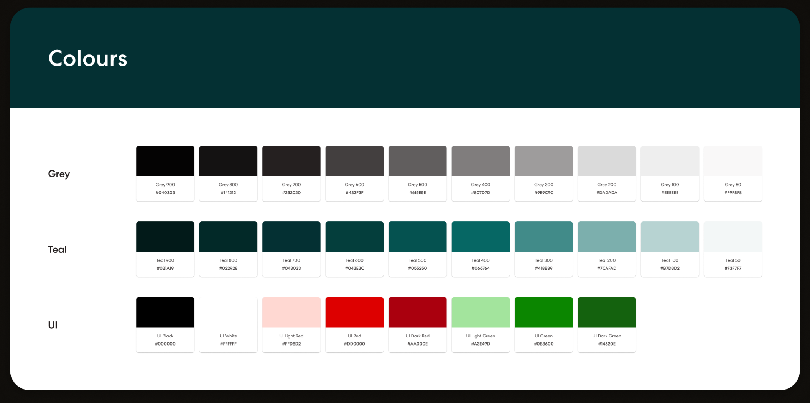
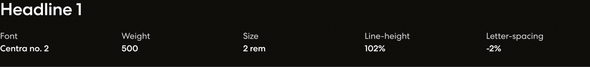
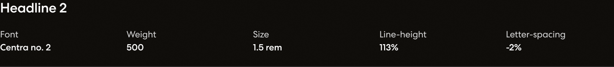
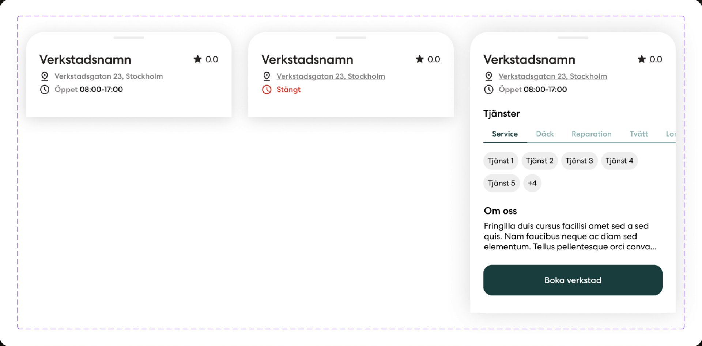
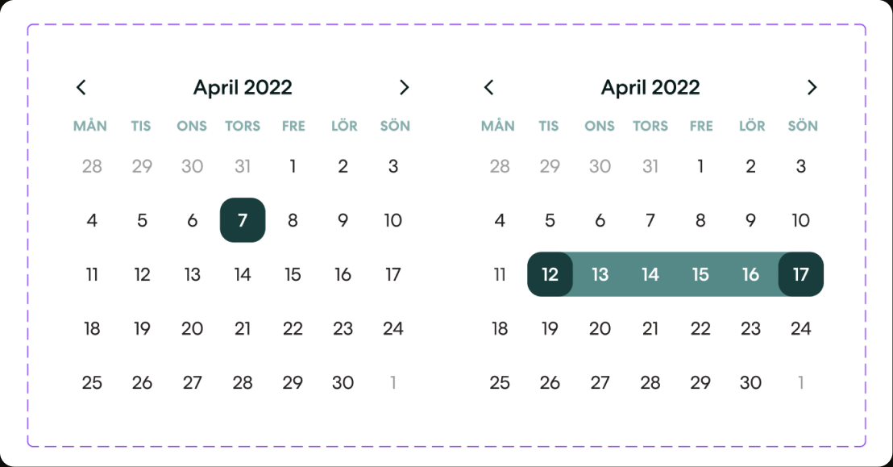
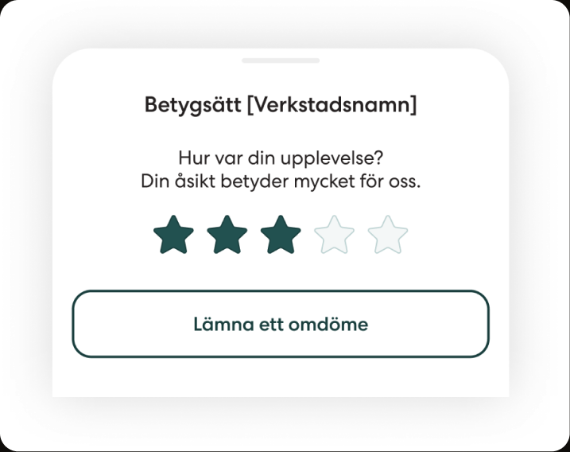

Giving an early idea shape, structure and direction.

Radeito connected car owners with workshops. I joined the project to shape the B2C mobile experience and turn an early product idea into an MVP.
With growth in mind from the start, I kept the design system lean and the components versatile, creating a foundation that could evolve with the product.
I structured the experience around four key steps, from discovering the right workshop and exploring its services to booking a time and managing the appointment.
Radeito was still defining its product and audience, so the visual identity needed room to evolve. Through regular workshops with the client, we established the foundations of the brand, including the green they wanted at its core.
I created a lean system of typography, colour scales and versatile components, giving the MVP consistency while leaving room to evolve as we learned more about its users.





